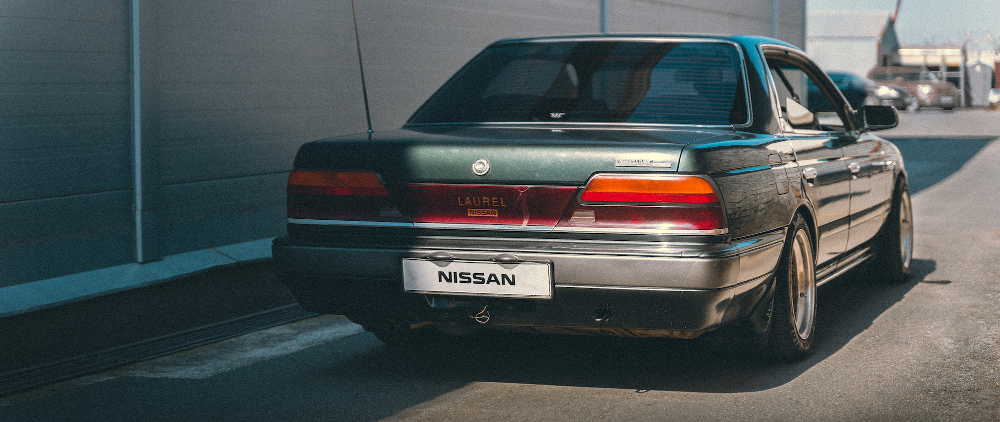
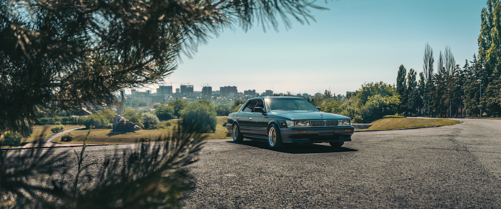
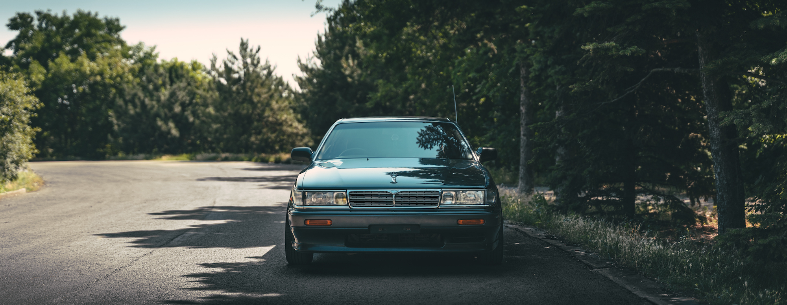
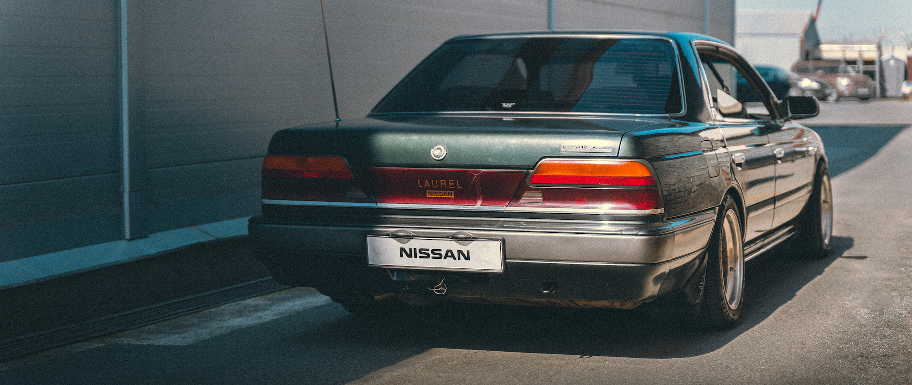
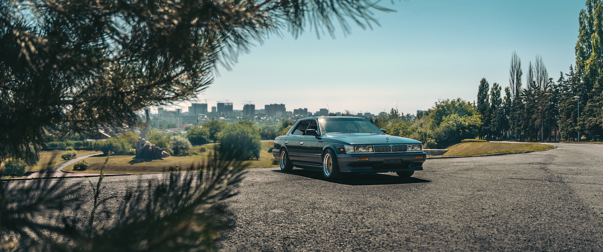
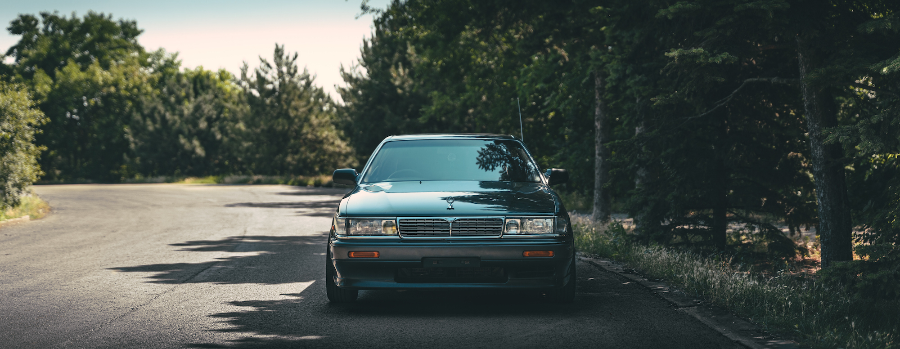

Nissan Laurel
Nissan, на мой взгляд, единственный автопроизводитель, который сейчас
продолжает прислушиваться к автолюбителям и пытается им угодить.
О чём свидетельствует недавно представленный прототип, несущий в себе замысел
автомобиля для людей, которые хотят и любят быть вовлечёнными в процесс управления.
Это уже становится, к сожалению, редкой особенностью...
А ведь не так давно в модельном ряду Nissan для внутреннего рынка
было столько интересных моделей! Как, например, этот Laurel в кузове C33
с потрясающе притягательным экстерьером, особенностью которого является
конструкция кузова хардтоп без центральной стойки.
Не задержать взгляд на этом автомобиле невозможно.
А если вспомнить ещё о возможных фишках, которыми могли оснащаться различные
комплектации: система подруливающих колёс задней оси Hicas, автозатемняющиеся
зеркала заднего вида, система бесключевого доступа, система адаптивной подвески
DUET-SS (с ультразвуковым датчиком в передней части кузова, который сканирует
дорожное покрытие и позволяет системе управления подобрать настройки подвески наилучшим образом) 😏
 




